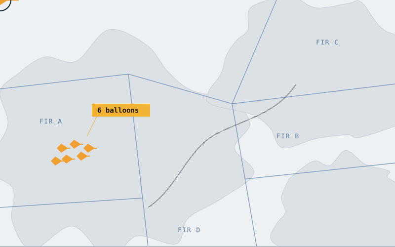
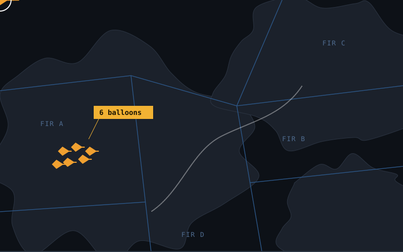
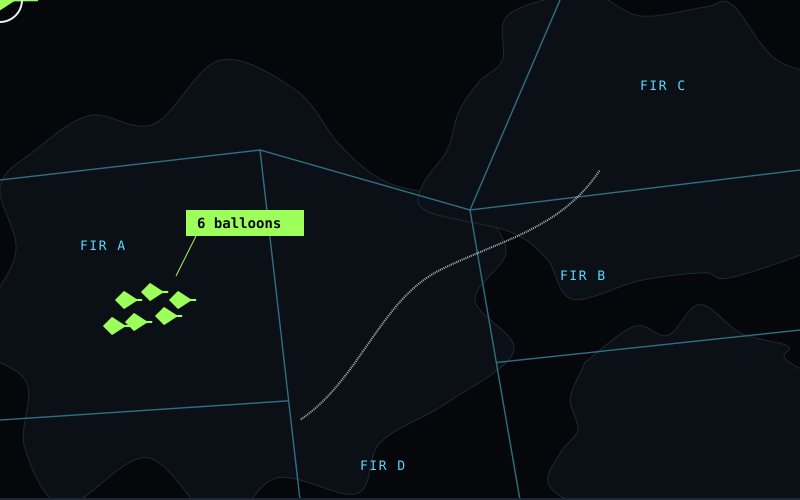
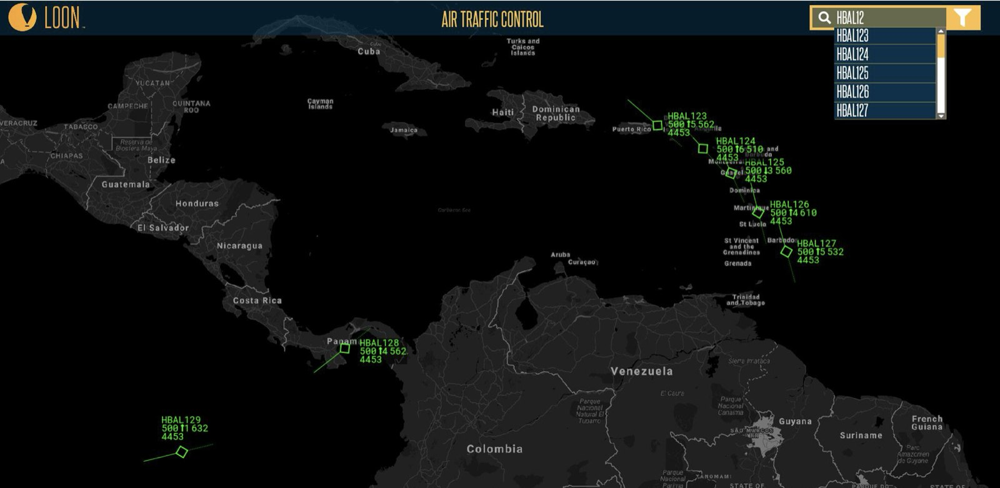
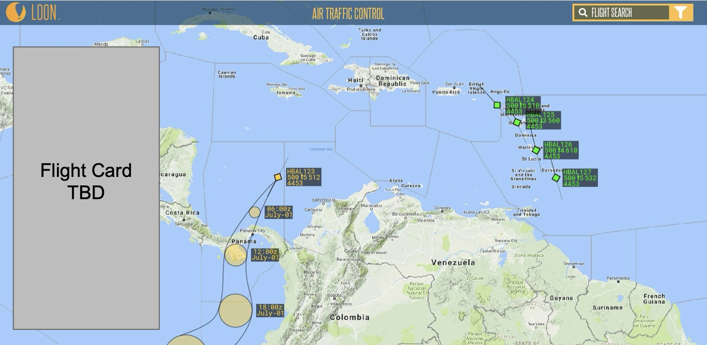
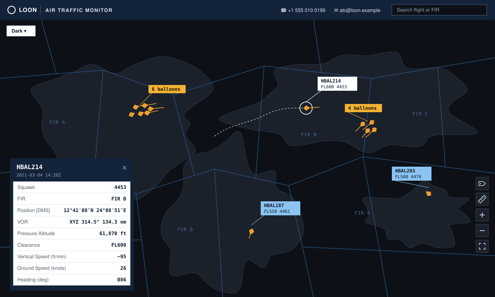
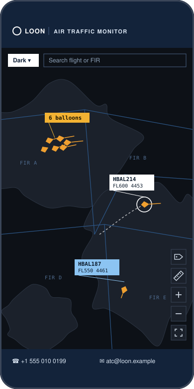

Air Traffic Website
An air traffic website that shows controllers a balloon fleet sailing the winds through their airspace, in the conventions they already work in. I designed and built it.



The people who decided whether Loon could fly were air traffic controllers and civil aviation authorities across South America. I worked with them in person and remotely, in Spanish.
Their tools are built around aircraft that turn and climb on command. A balloon has no engine to push it sideways. It sails the stratosphere’s layered winds, changing altitude to catch one blowing where it needs to go, along flight paths planned from wind forecasts. Controllers could request any change, so I explained the balloon’s limits and what an altitude off its planned winds does to its path.
Give controllers balloon positions they can verify, in a form they already know how to read.
I wrote down who it was for and what it had to do. It served more than 200 flight information regions, plus civil aviation, military and homeland-security agencies. It needed operational transparency, global flight tracking and current positions. The requirements covered flight information, flight paths and search, with browser compatibility and loading speed as the main fixes to the existing site.
I mocked up the full flow and reviewed it with air traffic control in Lima in July 2018, before writing any code: logging in, the landing page, flight search and the balloon tracker.
The balloon labels iterated within the review itself: from minimal green callsign blocks in the style of radar data blocks, to a richer card for each balloon. Each card draws the predicted flight path as circles that grow over time, so controllers see the forecast’s uncertainty rather than one confident line.
Then I designed and built the responsive web app, following the conventions of air traffic tools.




Controllers used it to check balloon positions, which were more precise and more current than their radar. Many control centers kept it full screen on a TV, running around the clock. In smaller countries, controllers often had only a personal phone to check it on.
Access could also decide an agreement. Loon had spent years building its relationship with Cuba and explaining how it operated, and then the website became the sticking point: without it they couldn’t monitor the fleet, and wouldn’t sign. The site depended on Google and Firebase services that had to be allowlisted there, and I got that done within two weeks. Cuba signed a tentative memorandum of understanding. It didn’t grant blanket permission to fly through or land, so we kept the fleet out of Cuban airspace to avoid any risk of a landing there.
Overflight approval came country by country across South America. Partners included ICAO, the FAA, NASA, the NTSB, the US Air Force and the Colombian Air Force.